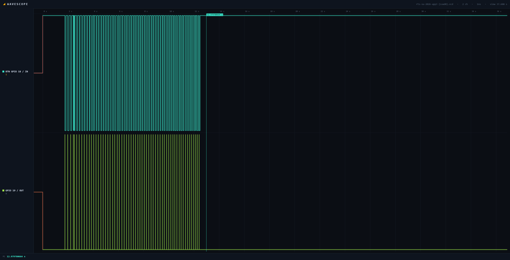
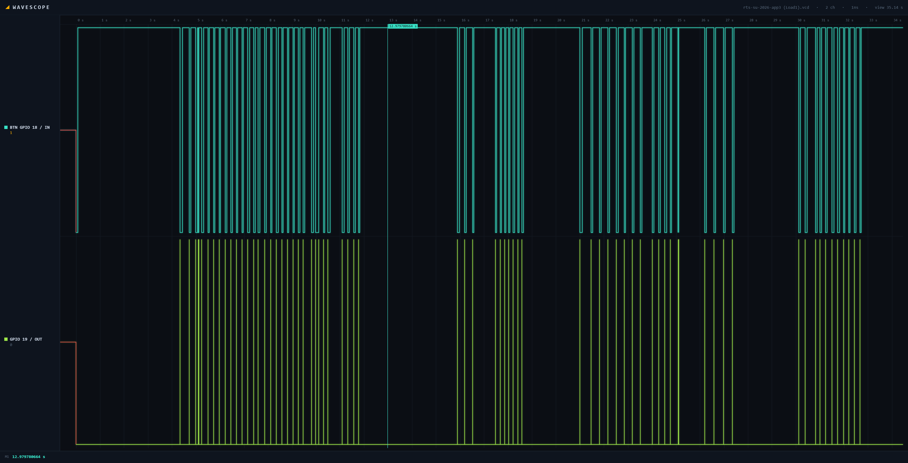

Latency Test Summary
Each test used repeated emergency-stop button presses. Latency was measured from the recorded ISR entry time to the beginning of each responder task.
| Test Condition | Semaphore Maximum | Notification Maximum |
|---|---|---|
| Load 0: background tasks disabled | 3,178 µs | 30 µs |
| Load 1: background tasks enabled | 10,369 µs | 22,951 µs |
| Fault injection: ISR yield removed | 34,835 µs | 44,843 µs |
Load 0 — Background Tasks Disabled
WITH_LOAD was set to 0, so only the two responder tasks were running on Core 1. The direct task notification recorded a maximum latency of 30 microseconds, while the binary semaphore path recorded a maximum latency of 3,178 microseconds.

Load 1 — Background Tasks Enabled
WITH_LOAD was set to 1, enabling Tasks A through D on Core 1. The semaphore maximum increased to 10,369 microseconds, and the notification maximum increased to 22,951 microseconds.
Task A is the main source of priority interference because its priority of 15 is higher than the responder priority of 12. Tasks B, C, and D use priorities 10, 5, and 2, so they cannot preempt a responder task after it begins running.

Effect of Background Load
The semaphore maximum increased by approximately 3.26 times:
10,369 / 3,178 ≈ 3.26
The notification maximum increased by approximately 765 times:
22,951 / 30 ≈ 765.03
These results demonstrate that the signaling primitive is only one part of response latency. Task priorities, CPU contention, and the scheduler determine when an awakened task can actually begin executing.
Fault Injection
The induced failure removed the following statement from the interrupt service routine:
portYIELD_FROM_ISR(higher_woken);The semaphore and notification were still delivered, so the program remained functionally operational. However, the responder tasks did not receive an immediate scheduling opportunity after the ISR completed.
The semaphore path reached a maximum latency of 34,835 microseconds, and the notification path reached 44,843 microseconds. This matched the predicted failure: the emergency events were not lost, but their response was significantly delayed.
Engineering Analysis
1. What belongs inside the ISR?
static void IRAM_ATTR button_isr(void *arg)
{
// Uses instruction RAM instead of waiting on flash access.
int64_t now = esp_timer_get_time();
// Ignore repeated edges caused by button bounce.
if (now - last_edge_us < DEBOUNCE_US) return;
last_edge_us = now;
// Raise GPIO 19 to mark ISR entry for the logic analyzer.
gpio_set_level(ISR_PULSE_GPIO, 1);
// Record the accepted ISR entry time.
isr_entry_time_us = now;
presses_observed++;
// Track whether a higher-priority task was awakened.
BaseType_t higher_woken = pdFALSE;
// Wake the binary-semaphore bottom-half task.
xSemaphoreGiveFromISR(btn_sem, &higher_woken);
// Wake the direct-notification bottom-half task.
vTaskNotifyGiveFromISR(task_notif_handle, &higher_woken);
// Lower GPIO 19 to complete the ISR timing pulse.
gpio_set_level(ISR_PULSE_GPIO, 0);
// Immediately schedule an awakened higher-priority task if needed.
portYIELD_FROM_ISR(higher_woken);
}My ISR does not contain any long tasking and needs to stay short. It does not have any memory allocation, delays, mutexes, long processing, logging, or other similar tasks that could take a while. These belong in the bottom half tasks since that is meant to handle the longer operations.
2. Binary semaphore vs direct task notification — quote your measured latency numbers. Which is faster? Why?
Running the idle with load 0, I measured the binary semaphore path at a max 3178 us latency and the direct task notification path at a max 30 us latency. The direct task notification runs faster by a larger margin than the binary semaphore. The assignment on Canvas says not to explain why and to just quote which task runs faster, and we will learn why in later units.
3. Latency under load — quote idle (`WITH_LOAD 0`) vs loaded (`WITH_LOAD 1`) numbers.
Idle load 0 latency was measured at the binary semaphore, max 3178 us latency, and direct task notification max 30 us latency. For loaded load 1, latency was measured at binary semaphore max 10369 us latency and direct task notification max 22951 us latency. Running the system-loaded increases the latency for both tasks. The semaphore latency increased by 3.26x, and the notification latency increased by 765.03x. Since Task A has a priority of 15, when loaded it can delay the bottom half from running since it has the higher priority. Since the bottom half has a priority of 12, and the other tasks B, C, and D have lower priorities, respectively being 10, 5, and 2. They won't preempt the bottom half task once it's ready.
4. How do priorities affect emergency-response latency?
A ready task can only execute when no higher-priority task is using the same core. Task A has priority 15, so it can delay the priority-12 responder tasks. Tasks B, C, and D have lower priorities and cannot interrupt the responders once they begin.
5. Why is portYIELD_FROM_ISR important?
When an ISR wakes a task that should run immediately, portYIELD_FROM_ISR allows the scheduler to perform the context switch as the ISR exits. Removing it leaves the task in the ready state until another scheduling opportunity occurs, increasing the response delay.
Hazard Analysis
| Hazard | Possible Cause | System Effect | Mitigation |
|---|---|---|---|
| Delayed emergency response | Higher-priority CPU workload | The safe-state task begins later than expected | Measure worst-case latency and reserve an appropriate responder priority |
| Excessive ISR duration | Logging or long calculations inside the ISR | Other interrupts and tasks are delayed | Keep the ISR short and defer work to a bottom-half task |
| Delayed context switch | Missing portYIELD_FROM_ISR | The responder remains ready but does not run immediately | Request the ISR yield when a higher-priority task is awakened |
| False repeated emergency events | Mechanical button bounce | One press is interpreted as multiple events | Apply a minimum debounce interval inside the ISR |
| Incorrect latency measurement | Unsafe handling of shared timestamp data | Recorded results do not represent actual response time | Use controlled shared-data access and carefully defined measurement points |
| Responder starvation | Incorrect priority assignment | The emergency task may wait for an unacceptable duration | Verify priority relationships under worst-case processor load |
Safe-State Principle
A production ride controller should default to a safe state when an emergency event is detected or when timing behavior becomes uncertain. This simulated project represents that behavior by treating every accepted emergency-stop interrupt as a command to stop operation, activate alarms, and record the event.